🎯 目標志向 ちょる3位・min 7位
どちらも「で、どこに向かう？」に力が出やすいのかもしれません。やり方が違っても、ゴールの話はしやすそうです。
🍒 ちょる × min 🦁
ストレングスファインダーの上位資質をならべて、ふたりの「こうかも？」を集めました。正解ではなく、おしゃべりのタネとして楽しんでください。
 行くよー！うん、気をつけてね
行くよー！うん、気をつけてねまず、ならべてみます
気になる資質を押すと、ふたりの中で光ります。おそろいの資質は2人とも光ります。

ひと目で分かる凸凹
ちょるさんminさん
これは「できる・できない」ではなく、力の出やすい向きの話です。ちょるさんが人付き合いを苦手という意味ではありません。違いがあるから、話してみると面白いかもしれません。
違うのに、通じ合うところ
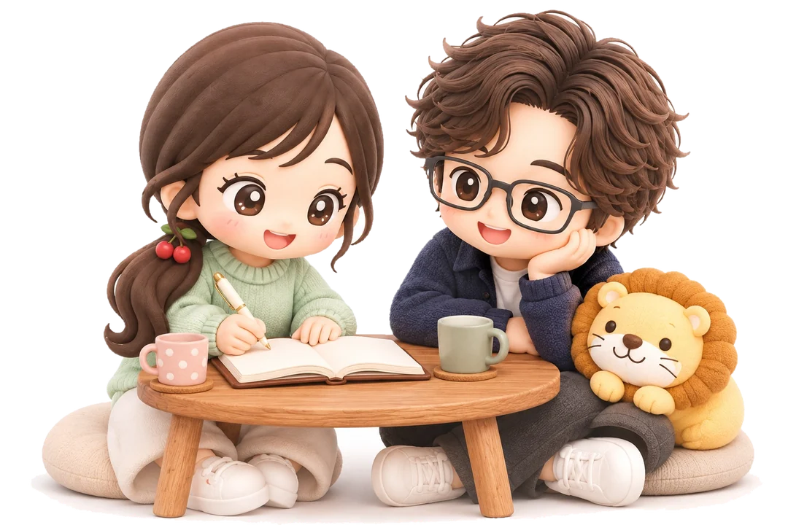
どちらも「で、どこに向かう？」に力が出やすいのかもしれません。やり方が違っても、ゴールの話はしやすそうです。
ひとりで考える時間が、どちらにも心地いいのかもしれません。同じ部屋で別々に静かに過ごす時間も、ふたりらしい過ごし方のひとつかも。
たとえるなら、こんなふたり？

未来志向2位。「まずやってみよう」が出やすいのかもしれません。
慎重さ3位。「ちょっと確かめよう」が出やすいのかもしれません。もちろん、前後を交代する日もあるはずです。
💐 ふたりの本当にあったお話
副業を始めて、見たことのない世界に飛びこんだちょるさん。楽しい反面、はじめて大きな壁にぶつかって、しくしく泣く日がありました。

元気が出るようにと、minさんが用意したのは花束と素敵なお手紙でした。泣いた次の日に、ちゃんと形にして届けてくれたんです。
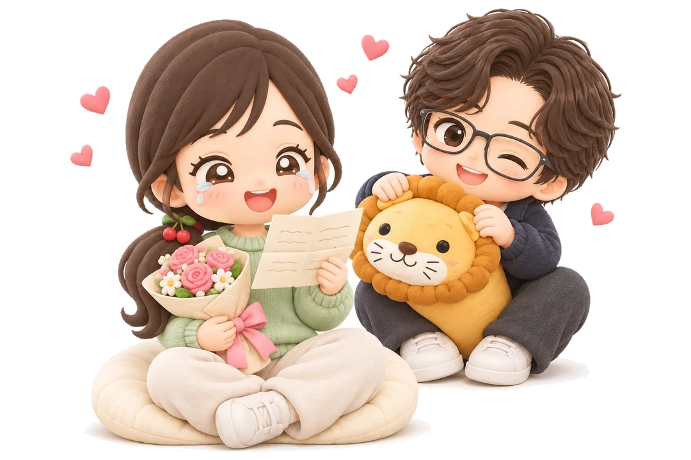
ちょるさんは「人に恵まれている」とかみしめて、また前を向きました。minさんのお手紙には、いつも素敵な言葉が並んでいるそうです。
彼は言葉選びが
とても丁寧でちょるさんのつぶやき（11/15）より
本当の理由は、minさんだけが知っています。よかったら「あの時、どんな気持ちで選んだの？」と聞いてみてください。それが、この図鑑よりずっと素敵な答えになると思います。
暮らしの中で起きそうなこと
資質から想像した場面です。どちらがどちらでもおかしくありません。「うちは違うよ」があれば、それがいちばん面白い話のタネです。
もし話がかみ合わない時は、「夢の話」と「確認の話」を別の時間に分けてみるのも、ひとつの手かもしれません。
合言葉の案まず夢、次に石ころ。
感じ方が違う時は、「ここだけは守りたい」を1つ教え合うと、話しやすくなるかもしれません。
合言葉の案守るのは1つ、あとは流れで。
どちらかが気持ちをしまっているかも、と思ったら「いま本当はどう思ってる？」と聞いてみるのもよさそうです。
合言葉の案勝つ相手は、昨日のふたり。
休むことも「今日できたこと」に数えてみると、少し気持ちが軽くなるかもしれません。
合言葉の案今日の達成：ちゃんと休んだ。
もし、地図を描くなら
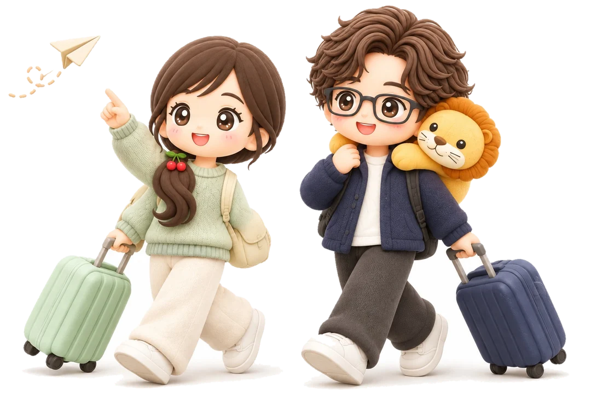
どんな朝を迎えたいかを、書き出してみる。
ビザ、お金、仕事、住まいの心配ごとを並べてみる。
今年のゴールを、1つ話し合ってみる。
貯金や韓国語を、続けやすい形にしてみる。
現地の家族や友だちとの関係を、ゆっくり育てる。
何度でも見返せる

身近な人との深いつながりが、力になりやすい資質です。
こんなふうに出るかもプロフィールの「好きな物：ちょる（彼女）」にも、少し表れているのかもしれません。
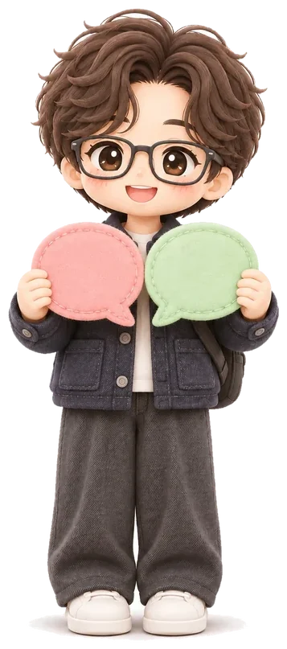
ぶつかるより、同じ答えを探したくなる資質です。
こんなふうに出るかも意見が割れた時に、着地点を探す場面で出ていそうです。

進む前に、気をつける所を見つけやすい資質です。
こんなふうに出るかも大きな決めごとの前に、確かめたくなることが多いかもしれません。

予定が変わっても、その場に合わせやすい資質です。
こんなふうに出るかも計画どおりにいかない日に、ふっと空気がほどけるかもしれません。
相手の気持ちを感じ取りやすい資質です。
こんなふうに出るかも言葉にする前の疲れや不安に、気づく場面があるかもしれません。
静かに考える時間で、整いやすい資質です。
こんなふうに出るかもちょるさんとおそろいです。黙っていても心地いい時間があるかもしれません。

決めた的に向かって、集中しやすい資質です。
こんなふうに出るかもこれもおそろいです。通関士の勉強にも、出ていたのかもしれません。

人の小さな伸びを見つけると、うれしくなる資質です。
こんなふうに出るかも本人が書いている「人の長所を見つけるのが得意」と、重なりそうです。

認められると、もっと力が出やすい資質です。
こんなふうに出るかも身近な人の「すごいね」が、うれしい燃料になるかもしれません。

出来事のつながりに、意味を感じやすい資質です。
こんなふうに出るかもふたりの出会いの物語を、大事に感じているかもしれません。
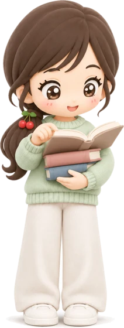
知らないことを知る時間が、ごほうびになりやすい資質です。
こんなふうに出るかも韓国語やお金の話で、「調べてみたよ」が増えるかもしれません。

まだ見ぬ景色を思い描くと、力が湧きやすい資質です。
こんなふうに出るかも「韓国でこんなふうに暮らしたいね」と話す時間に、出ていそうです。

行き先が決まると、まっすぐ進みやすい資質です。
こんなふうに出るかも夢を「今月やること」に置きかえる場面で、顔を出すかもしれません。
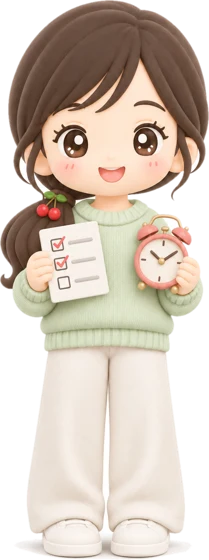
型や習慣があると、力が安定しやすい資質です。
こんなふうに出るかも貯金や記録を続ける仕組みづくりに、出ていそうです。
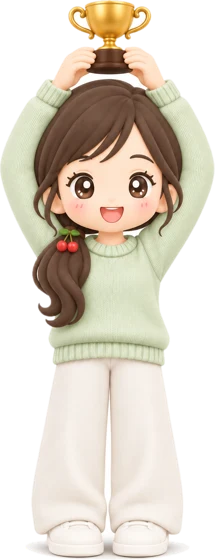
物差しがあると、火がつきやすい資質です。
こんなふうに出るかも昨日の自分と比べて、もう一歩がんばりたくなる日があるかもしれません。
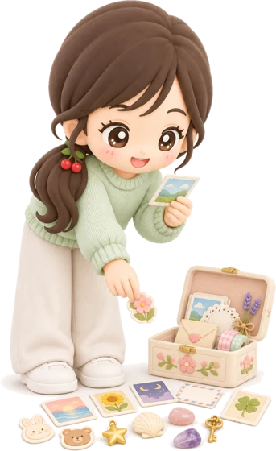
役に立ちそうなものを、集めておきたくなる資質です。
こんなふうに出るかも暮らしの情報が、いつの間にかたまっていくかもしれません。
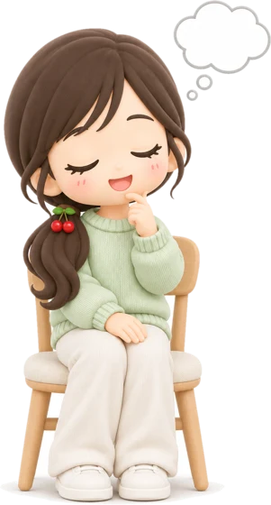
ひとりで考える時間から、答えが見つかりやすい資質です。
こんなふうに出るかもノートに書くと、気持ちを言葉にしやすいのかもしれません。

良いものを、もっと良くしたくなる資質です。
こんなふうに出るかも相手の得意を見つけると、もっと光らせたくなるかもしれません。
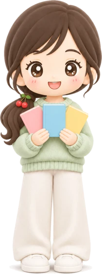
いくつもの道から、良い道を選びやすい資質です。
こんなふうに出るかも移住までの道順を、何通りか考えてみたくなるかもしれません。
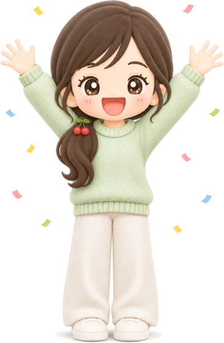
何かをやり遂げると、満たされやすい資質です。
こんなふうに出るかもできたことを数えると、元気が出やすいのかもしれません。
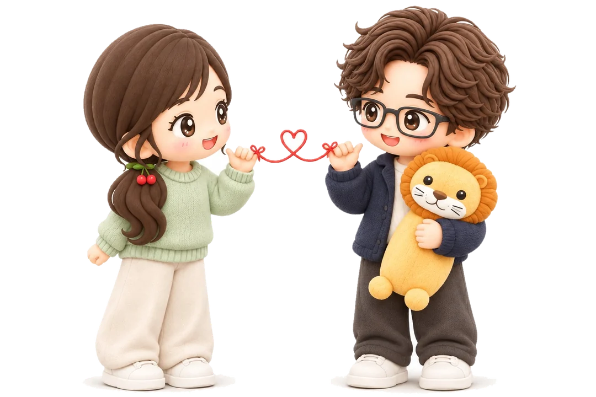
毎日ひらきたくなる
相手の「そこ好き」を、具体的に1つ伝えましょう。
書いても、話すだけでも大丈夫。
ふたりのやり方で、どうぞ。